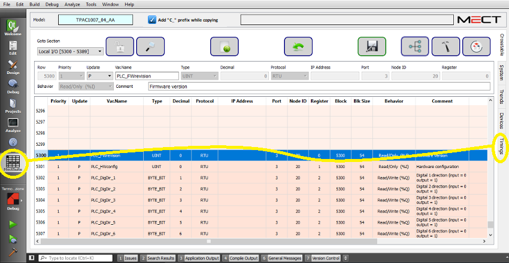

La fenêtre de “Timing” donne une idée générale du temps nécessaire pour permettre un échange correct des valeurs entre variables avec protocole RTU.
Pour démarrer la fenêtre “Timing”, voir la figure suivante:

L'interface est la suivante:
L'arborescence est similaire à celle de l'écran “Devices”, mais les variables de la colonne Name sont regroupées par :
Panneau → Device (interface de communication) → Priority → Node → Block → Variables
La colonne Info contient les mêmes informations que la fenêtre d'écran “Devices”.
La colonne Timings indique pour les protocoles RTU, le temps nécessaire pour lire l'élément sélectionné (Device, Priority, Node, Block).